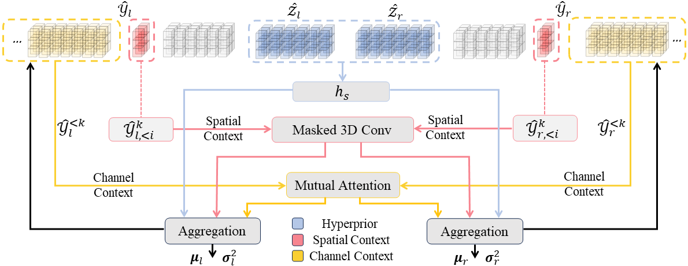
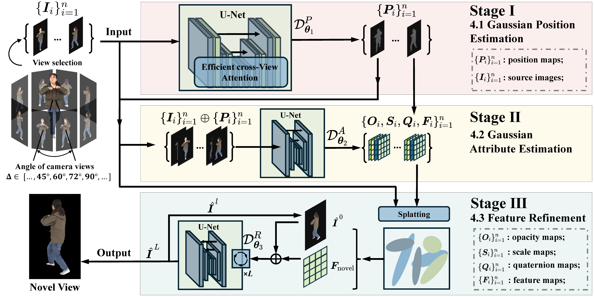
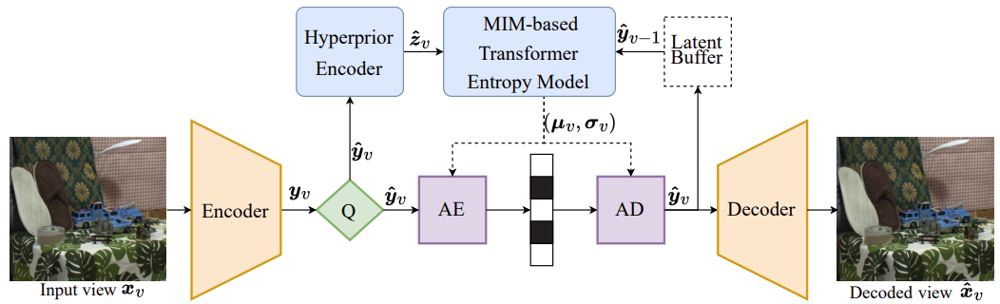
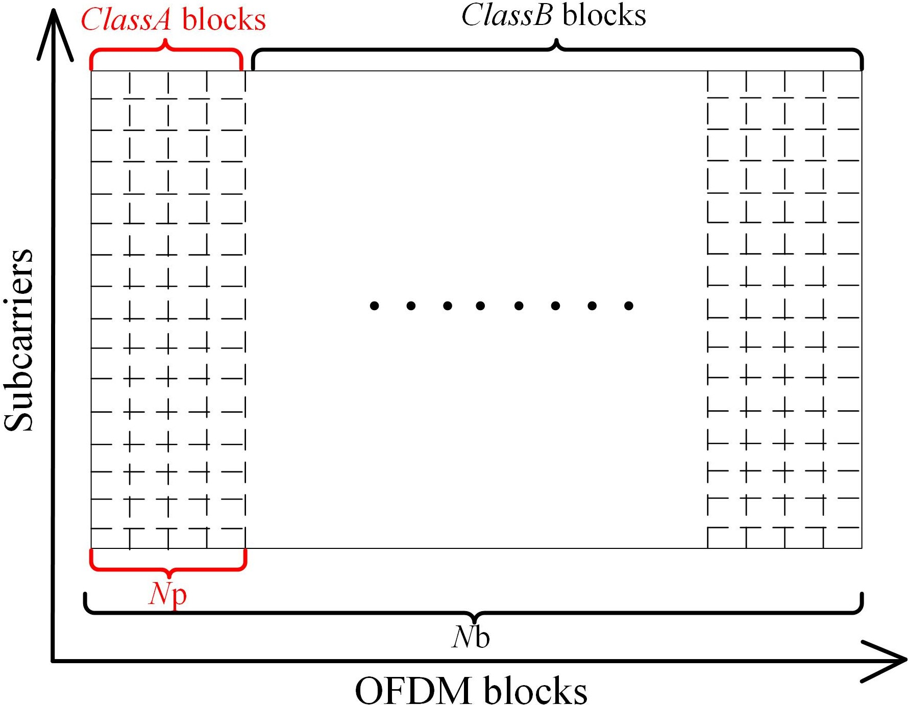

|
Zhening Liu Hi. I am a
|
{kind=link}
ResearchI am currently interested in deep learning and edge AI, especially towards efficient and effective data representation and compression. Besides, I also hold interest in holographic communication and wireless communication systems. |
|  |
Bidirectional Stereo Image Compression with Cross-Dimensional Entropy Model
Zhening Liu, Xinjie Zhang, Jiawei Shao, Zehong Lin, Jun Zhang European Conference on Computer Vision (ECCV), 2024 Paper | Code | Video A bidirectional stereo image compression architecture with 3D codec, symmetric attention module, and cross-dimensional entropy model. |
|  |
EVA-Gaussian: 3D Gaussian-based Real-time Human Novel View Synthesis under Diverse Camera Settings
Yingdong Hu, Zhening Liu, Jiawei Shao, Zehong Lin, Jun Zhang arXiv, 2024 Project Page Generalizable 3DGS-based holographic human reconstruction method supporting sparse input and real-time inference. |

|
MEGA: Memory-Efficient 4D Gaussian Splatting for Dynamic Scenes
Xinjie Zhang, Zhening Liu, Yifan Zhang, Xingtong Ge, Dailan He, Tongda Xu, Yan Wang, Zehong Lin, Shuicheng Yan, Jun Zhang arXiv, 2024 Compact 4DGS representation for dynamic space reconstruction with low storage overhead and high rendering quality. |
|  |
Content-aware Masked Image Modeling Transformer for Stereo Image Compression
Xinjie Zhang, Shenyuan Gao, Zhening Liu, Jiawei Shao, Xingtong Ge, Dailan He, Tongda Xu, Yan Wang, Jun Zhang arXiv, 2024 A stereo image compression pipeline based on Masked Image Modeling providing fast coding speed. |
|  |
Low-complexity Precoding-aided CFO Estimation for ICA-based MIMO OFDM Systems in URLLC
Zhening Liu, Yufei Jiang, Xu Zhu, Sumei Sun IEEE Transactions on Communications (TCOM), 2024 High spectral efficiency precoding-aided CFO estimation and channel equalization paradigm requiring no pilot. |
Activity
|